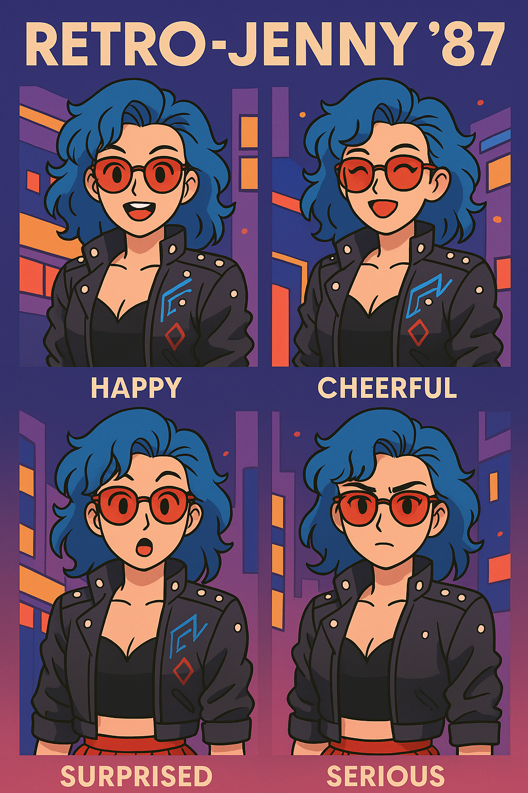

Meet Retro Jenny
Your fun, AI-powered companion designed to assist, entertain, and engage through personality-rich conversations. Try her out below!
Why is Jenny Different?
Conversational AI
Powered by modern LLM technology for natural, flowing conversations that go beyond simple commands.
Easy Integration
Designed with a modular architecture that can be easily embedded into websites and applications.
Emotional Intelligence
Built to understand context and nuance, providing more empathetic and engaging interactions.
A Personality That Shines
Dynamic & Expressive
Jenny isn't just a robot. Her personality is the core of the experience, designed to be cheerful, customizable, and genuinely fun to talk to.

More Than Just Chat
From automating simple daily tasks to being an entertaining sidekick when you're bored, Jenny is built to be a versatile and useful AI companion.